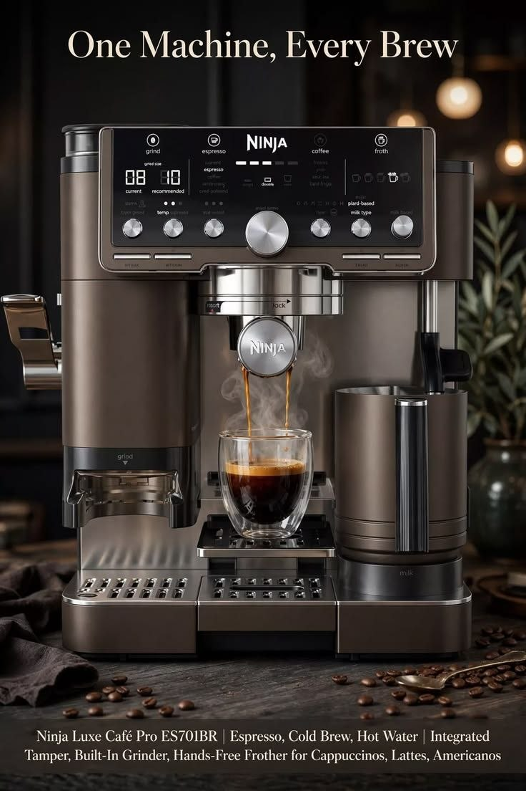
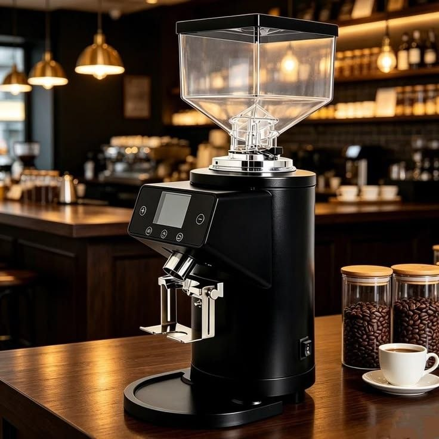
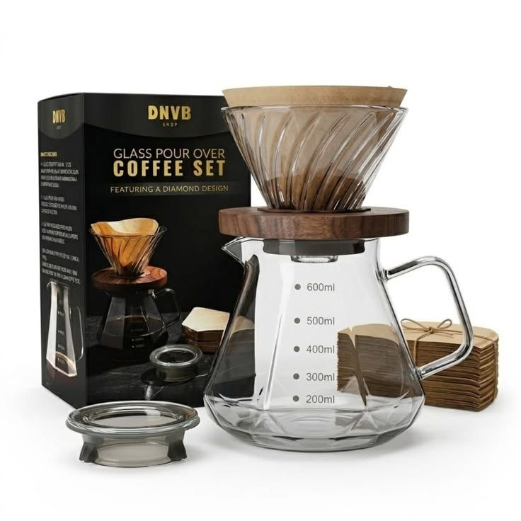
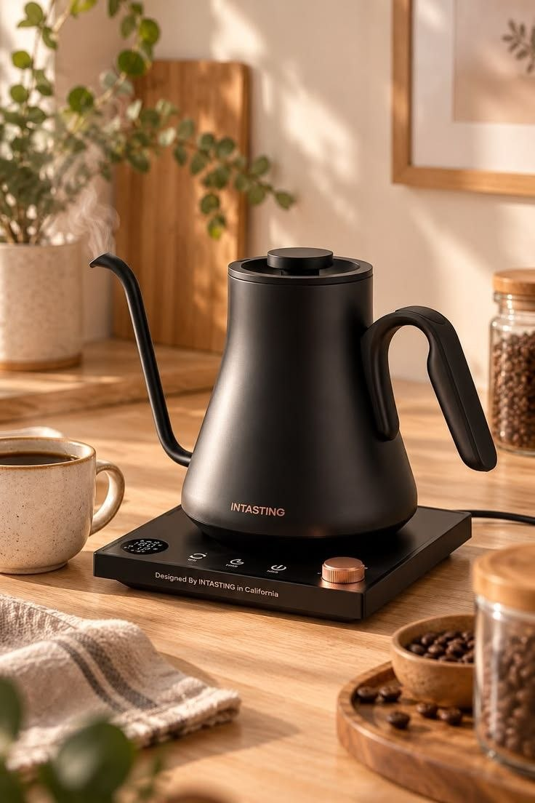
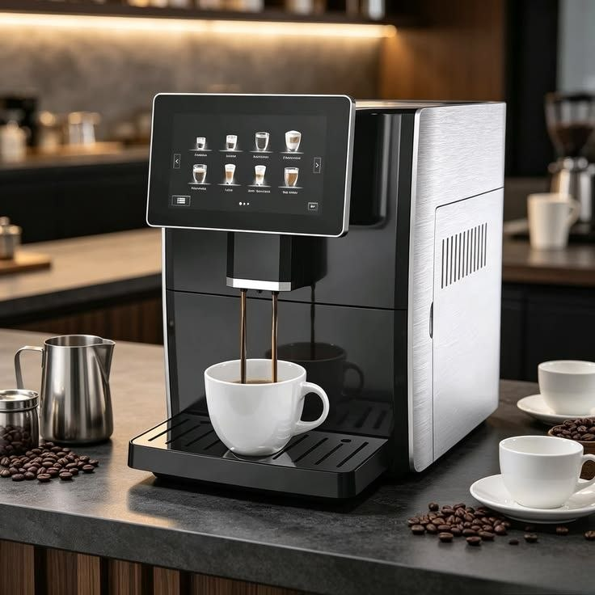
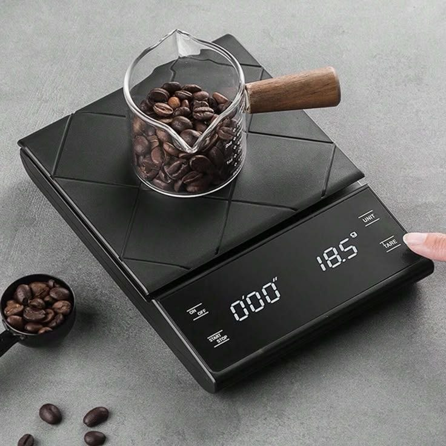
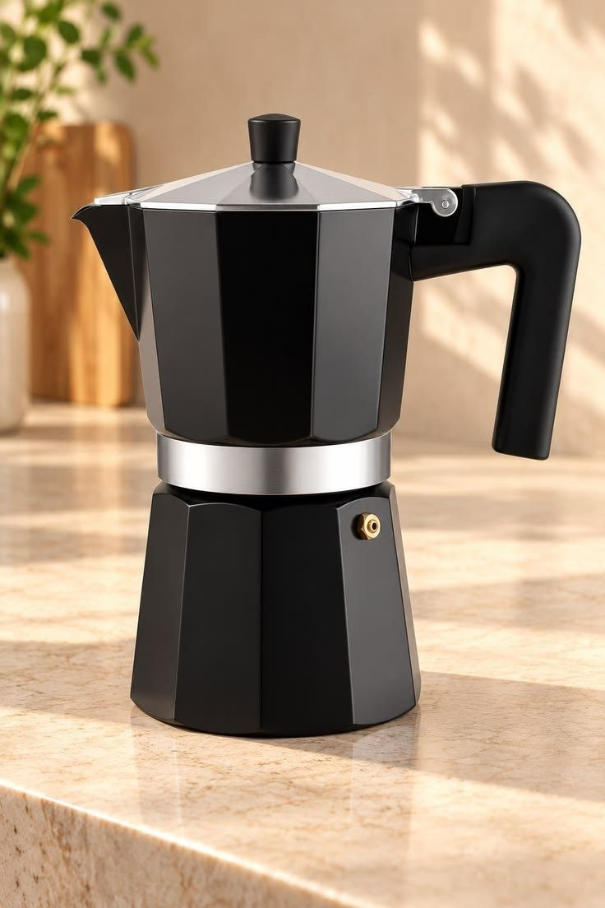
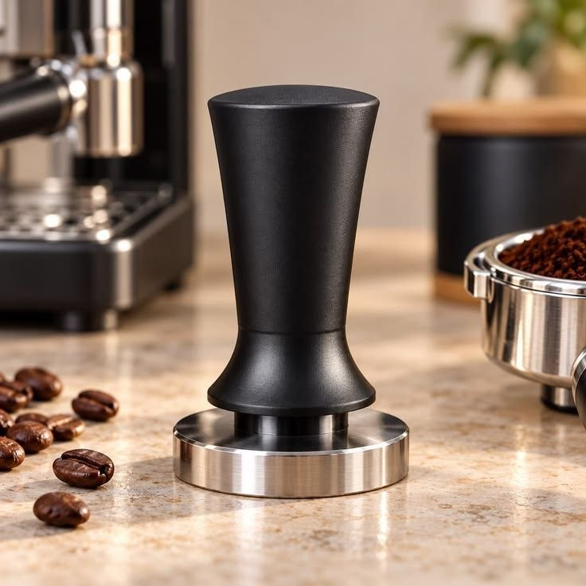
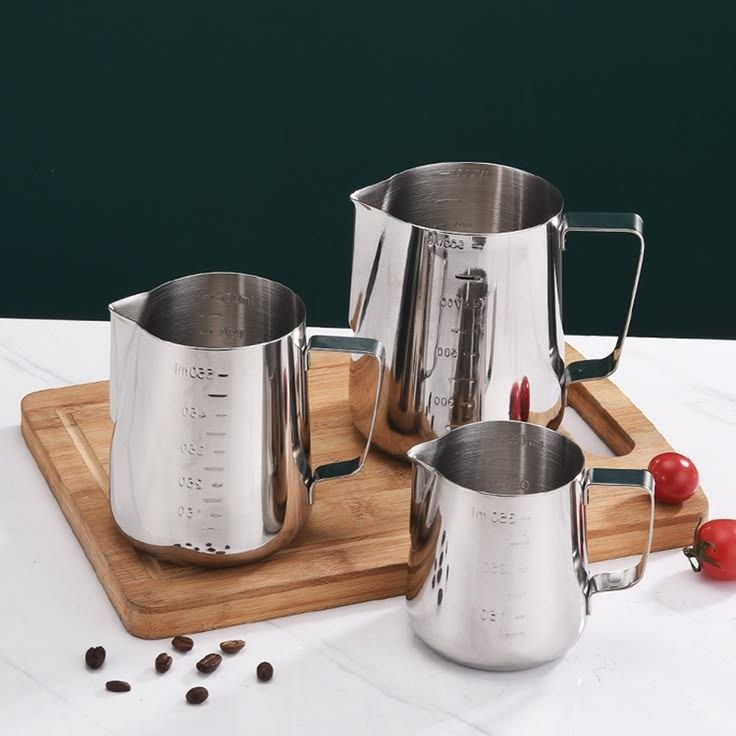

Pro Espresso Machine
Dual-boiler commercial grade machine with digital PID temperature control.

Precision Burr Grinder
40mm stainless steel conical burrs with 30 micro-adjustments.

Pour-Over Glass Drip Set
Borosilicate heat-resistant glass dripper with stainless steel mesh filter.

French Press Coffee Maker
800ml double-wall glass press with fine mesh filtration system.

Gooseneck Electric Kettle
Variable temperature control kettle with precise pour spout for manual pour-overs.

Automatic Milk Frother
Creates warm dense foam, light airy foam, or cold frothing at a button press.

Digital Barista Scale with Timer
0.1g high-precision scale with built-in auto-timer and tare function.

Moka Pot Stovetop Espresso
Classic Italian 6-cup aluminum stovetop espresso maker.

Stainless Steel Coffee Tamper
58mm heavy calibrated tamper with ergonomic wooden handle.

Stainless Steel Milk Pitcher
600ml pitcher with precision spout designed specifically for latte art pouring.